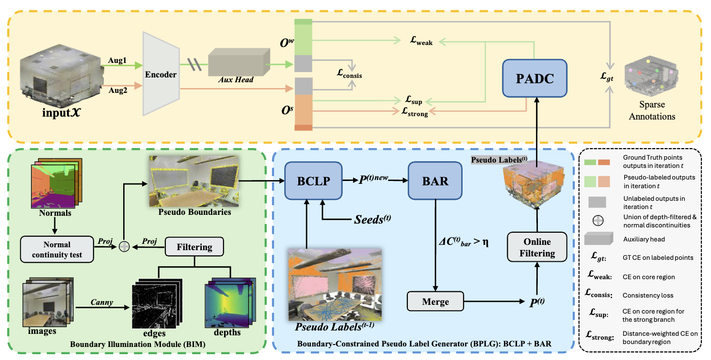

Boundary-first Weak Supervision
The method explicitly compensates for the boundary supervision missing from sparse point annotations.
ECCV 2026

Figure 1. Official overview of the Bound3D pipeline for weakly supervised 3D segmentation.
Bound3D targets a core weakness of weakly supervised point-cloud segmentation: sparse labels rarely cover difficult boundary regions, so models learn confident interiors but unreliable object contours. The method introduces a 2D-assisted pseudo-label propagation paradigm that does not depend on the model's own predictions or external foundation models. By producing cleaner pseudo labels and separating interior supervision from boundary supervision, Bound3D improves both category representation and boundary robustness under extremely limited annotation.
The official pipeline first illuminates boundary evidence with image, depth, and normal cues, then generates boundary-aware pseudo labels through a dedicated propagation stage. The training process follows a divide-and-conquer design: interior pseudo labels stabilize the core semantic regions, while boundary pseudo labels focus the optimization on hard contours that are underrepresented by sparse human annotations.
Compared with direct SAM-based 2D-3D projection, the official repository reports that Bound3D generates pseudo labels that are both purer and more uniformly distributed, which is especially important when annotation is restricted to one point per object.
The method explicitly compensates for the boundary supervision missing from sparse point annotations.
Pseudo labels are generated without relying on self-training loops, which reduces the classic confirmation bias of online labeling.
Interior and boundary regions are supervised differently so the model can learn stable class cores without neglecting hard edges.
The public repository currently exposes the abstract and the official overview figure, but not the final camera-ready PDF or formal ECCV BibTeX. This page therefore keeps the quantitative claims limited to the numbers already published by the authors in the repository summary.
Official BibTeX is not publicly available yet.
Please cite the final ECCV 2026 version once the authors release it.